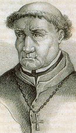

|
Thomas de Torquemada( 1420-1498 )Why did the chicken cross the road? Give Torquemada ten minutes alone with the chicken and he'll find out. The first official Confessor of the Spanish Inquisition, Torquemada presided over the burning of over 2,000 Jews and numerous other heretics. Primarily targeted were Spain's conversos, or Jews who had been baptized into Catholicism. But it turns out that Jewish blood is so goddamned filthy that even the sacrament of baptism is incapable of rendering it pure. If you were more than one sixty-fourth Jew, if you weren't sangre limpia, look out. Observant historians will note that Torquemada was one sixty-fourth Jew. Stories about Jews murdering Christian children, otherwise known as blood libel, had been circulating throughout Europe for centuries. The accounts exist entirely without evidence, arguably the result of paranoia, propaganda and anti-semitism - but the murder of Jews by Christians is equally documented, and Torquemada was absolutely convinced that Jews would be the ruination of Catholic Spain. He was an excellent precursor to Adolf Hitler. The Pope agreed to allow the Inquisition in 1481, and those arrested and given four choices. They could confess, pay a penalty, endure public torture, or be burned at the stake. Quite often, those arrested were subjected to all of the above. Torquemada's own grandmother was a converso, but he continued to elevate the level of his Inquisition to that of an ethnic cleansing or a full-blown massacre. Important to the religiously-motivated Inquisitors was that "no blood be spilt," which meant the act torturing confessions out of people required a special science. The favored techniques were flogging, the rack, and red coals applied to the feet. Also popular at the time was the strappado, in which you're suspended by the wrists and incrementally heavier weights are wrapped around your ankles or looped among your toes. Laying a framework of paranoia were Secret Accusers, people who'd tell on their neighbors or exact revenge against those they carried a grudge. Denying heresy meant torture, and confession led to death. Honesty did not pay during Torquemada's Inquisition, and no lawyer could assist you. Papal degrees provided a loophole: torture could not be repeated, but it could be continued. Burning at the stake was performed publicly as an auto-da-fé, or act of faith. If the condemned kissed the Holy Cross, they were garroted before the fire was set. If they merely apologized, they were burnt at the stake death with quick-burning Dura-logs. If the accused continued to be stubborn, they were incinerated with slow-burning fresh green wood. Anywhere from 13,000 to 50,000 people were killed, and the Sierra Club has yet to approach the Spanish government for reparations. To Torquemada's credit, a large percentage of his victims were very wealthy. They were saddled with exhaustive fines, court costs, and jail time. Confinement decimated a significant portion of the upper class. Moneys traveled up the hierarchy of church officials. Torquemada lived a long life surrounded by comfort before dying of natural causes at the age of 78. |